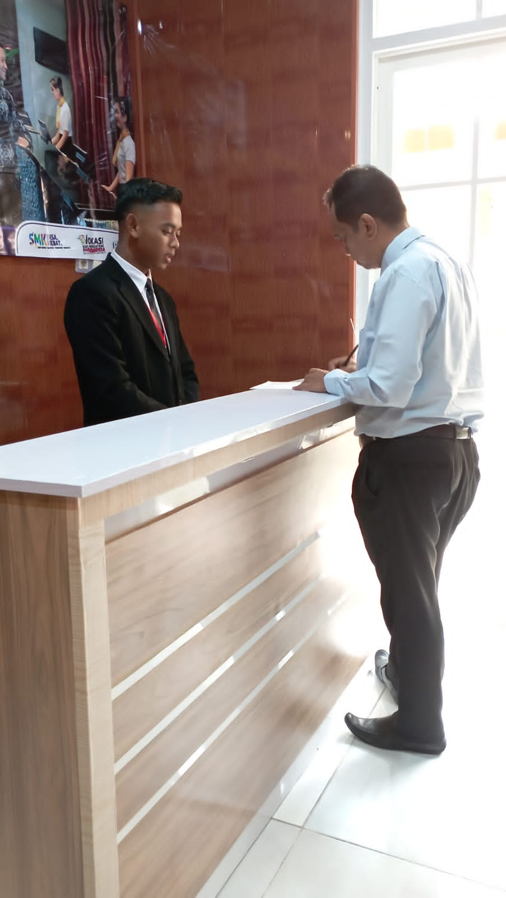
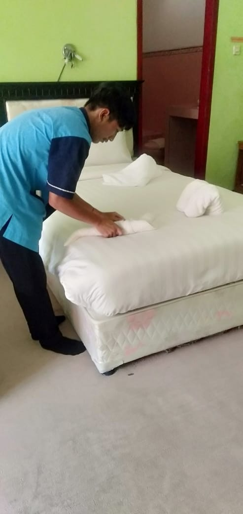

Jurusan Perhotelan
Perhotelan merupakan bidang ilmu yang mempelajari pengelolaan hotel serta cara menyeimbangkan aspek wisata dan manajemen bisnis untuk mencapai kesuksesan. Beberapa topik yang akan diajarkan antara lain mengenai pelayanan yang memuaskan bagi pelanggan, melindungi budaya lokal, manfaat ekonomi yang diperoleh bagi masyarakat sekitar serta kesejahteraan karyawan. Selain itu akan dibekali dengan pelajaran bahasa asing untuk menghadapi tren wisatawan internasional yang terus meningkat.
Prospek Kerja Perhotelan
Ada banyak sekali jenis profesi di bidang perhotelan yang menanti lulusan pendidikan vokasional perhotelan. Jenjang karier yang ditawarkan cukup bervariasi. Dengan bekal keilmuan yang dipelajari di bangku perkuliahan, pada umumnya penguasaan ilmu perhotelan menjadi nilai jual yang patut dibanggakan. Selain bekerja untuk brand ternama, kamu juga bisa juga terjun ke dunia bisnis dan menciptakan lapangan pekerjaan sendiri. Di luar dunia perhotelan, kamu juga memiliki peluang mengembangkan potensi dengan mencoba bekerja di sektor lainnya, seperti pendidikan, media hingga dunia kreatif.
